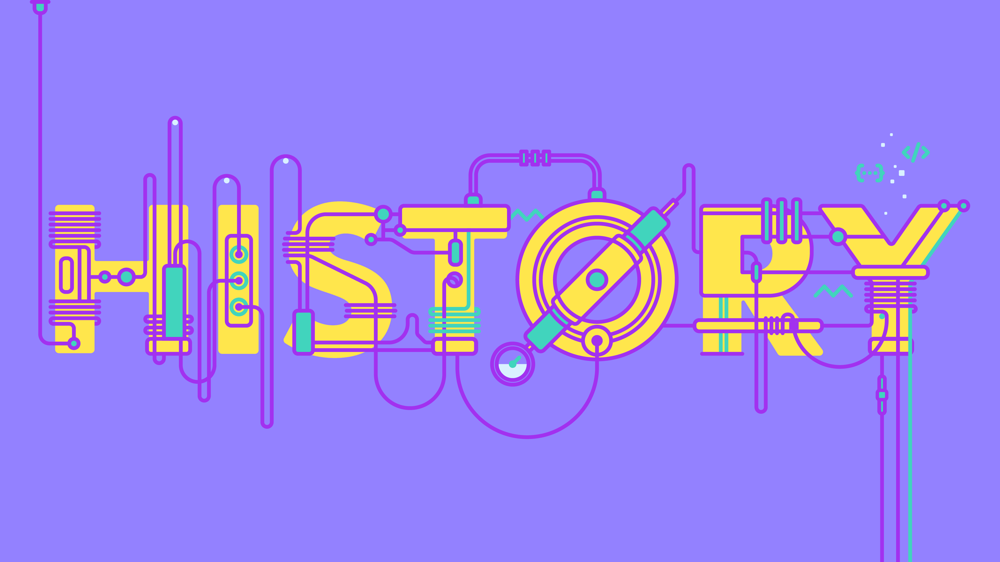

Website History

As stated in the home page of UNIque Blog, this website was created as a project for our FBF 1153 Web Development course. The purpose of this web development project is to reflect everything we have learned this semester which includes Hypertext Markup Language (HTML), Cascading Style Sheets (CSS), and Javascript. In addition to that, our website’s target audience is university students who may struggle with their student lives, seeking tips to conquer college life, or simply seeking entertaining student-related content online. Our website’s goals include connecting students with each other,
educating students and providing useful content such as tips on how to survive college life. Our website will provide a comfortable place for students to make new friends and connections as well as share crucial information and resources. Lastly, our website will allow students to share interests and passions as well as provide the latest university news.
Our team consists of 5 members of which every member is a Foundation student. Before the creation of this website, we have accomplished a report that is about doing research on 5 related websites to our intended website in order to identify the proper features and design that a good website should have. Next, we proposed features that we wanted to implement in our website in the report, which bring us to the creation of this website. Hence, this website is the summary of all the practical applications we have learned in this course. Our team is fully aware that this website is far from perfect, not to mention a professional website, however, our team has worked hard to learn and practice our skills in web development and we hope you, our amazing user will enjoy our website!